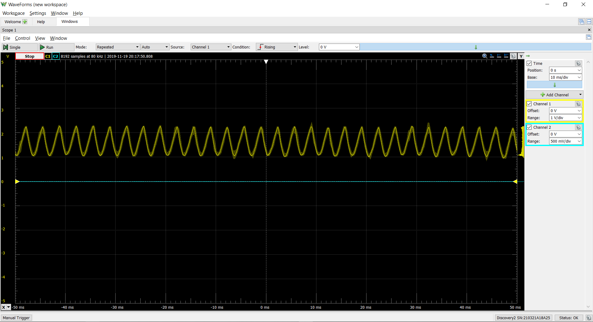

We are using a STM32 BluePill as the microcontroller to sum and scale all the tones. Unfortunately, this does not work well. It sounds as if the signals are not being sampled at a high enough frequency and is being clipped.

We have talked with Stan about the using the STM32 BluePill and the issues we were having. Following his suggestion, we got our hands on a Teensy 3.6. Luckily, we are able to get the system working as we expect and hope. We can now output audio signals that are sampled every clock cycle! (include figure from Nov 19 the second one)
We have also implemented the ADSR such that the audio signal is scaled according to the magnitude of the ADSR signal.
After a long night of hard work (staying up to 4am) we accomplished the ability to play multiple notes in both the electrical and mechanical system. After a few hours of trying to calibrate the system (mechanically) we decided to not use the mirrors at all.
Sprint Review:
We received feedback on the mechanical mounting system and are pivoting to having the lasers permanently mounted on the copper pipe while the mirrors will be adjustable.